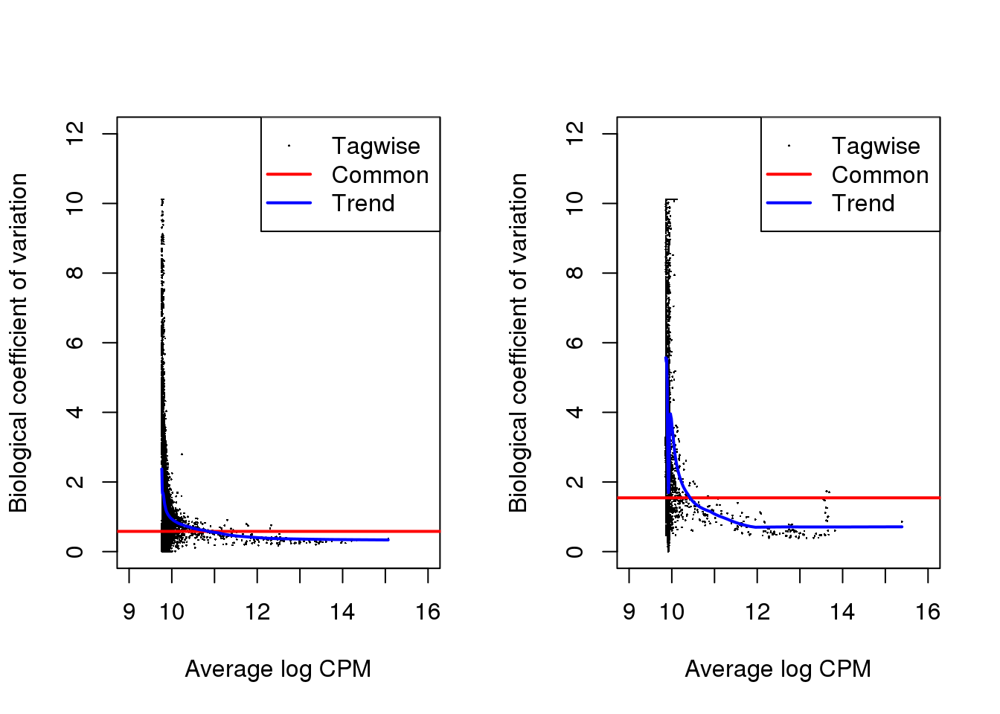
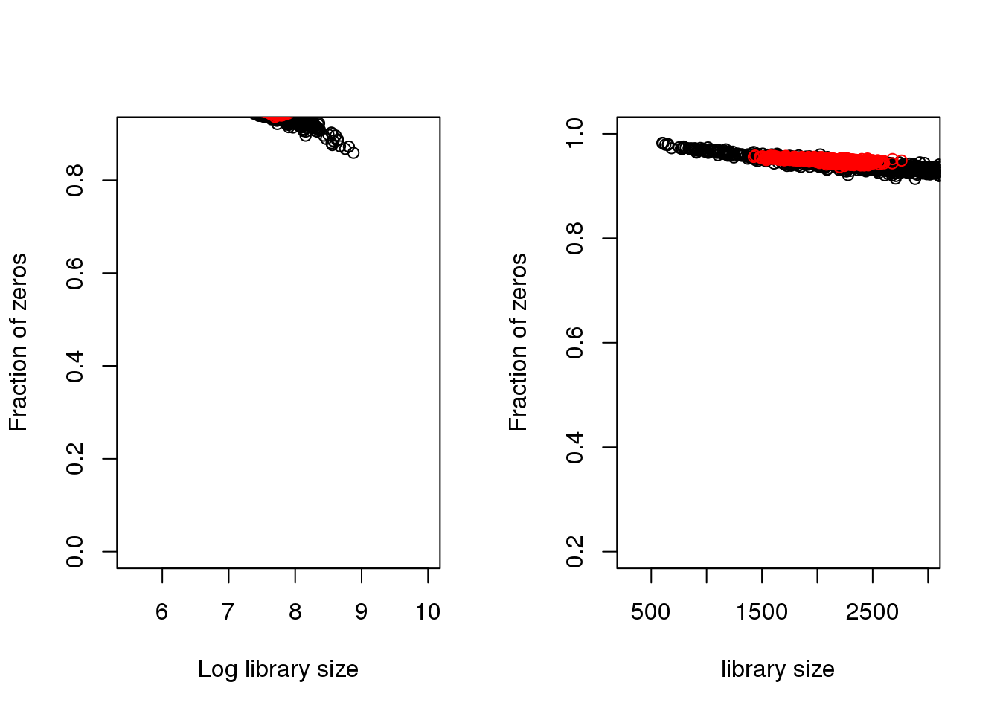

Last updated: 2019-01-11
workflowr checks: (Click a bullet for more information) ✔ R Markdown file: up-to-date
Great! Since the R Markdown file has been committed to the Git repository, you know the exact version of the code that produced these results.
✔ Environment: empty
Great job! The global environment was empty. Objects defined in the global environment can affect the analysis in your R Markdown file in unknown ways. For reproduciblity it’s best to always run the code in an empty environment.
✔ Seed:
set.seed(20181115)
The command set.seed(20181115) was run prior to running the code in the R Markdown file. Setting a seed ensures that any results that rely on randomness, e.g. subsampling or permutations, are reproducible.
✔ Session information: recorded
Great job! Recording the operating system, R version, and package versions is critical for reproducibility.
✔ Repository version: 80dd726
wflow_publish or wflow_git_commit). workflowr only checks the R Markdown file, but you know if there are other scripts or data files that it depends on. Below is the status of the Git repository when the results were generated:
Ignored files:
Ignored: .Rhistory
Ignored: .Rproj.user/
Ignored: .sos/
Ignored: analysis/.sos/
Ignored: dsc/.sos/
Untracked files:
Untracked: dsc/benchmark.sh
Untracked: dsc/code/zinbwaveZinger/
Untracked: dsc/config.yaml
Untracked: dsc/data/cis_gene_expression.txt
Untracked: dsc/data/pbmc.rds
Untracked: dsc/data/pbmc_counts.rds
Untracked: dsc/data/pbmc_counts_sub.rds
Untracked: dsc/data/pbmc_counts_sub_celltype.rds
Untracked: dsc/data/pbmc_simdata_berge.rds
Untracked: dsc/data/samples-id-for-paper.txt
Untracked: dsc/modules/get_sim_data.dsc
Untracked: dsc/modules/process_data.R
Untracked: dsc/modules/process_data.dsc
Untracked: dsc/modules/sim_data.R
Untracked: dsc/modules/sim_data.dsc
Untracked: dsc/monitor.py
Untracked: dsc/monitor_output/
Untracked: dsc/power_berge.dsc
Untracked: dsc/type1_berge.dsc
Untracked: dsc/type1_simple.dsc
Untracked: output/
Unstaged changes:
Modified: analysis/index.Rmd
Modified: dsc/benchmark.dsc
Modified: dsc/data/README.md
Modified: dsc/modules/get_data.R
Modified: dsc/modules/get_data.dsc
| File | Version | Author | Date | Message |
|---|---|---|---|---|
| Rmd | 80dd726 | Joyce Hsiao | 2019-01-11 | simulate Berge et al data |
Koen Van den Berge, Fanny Perraudeau, Charlotte Soneson, Michael I. Love, Davide Risso, Jean-Philippe Vert, Mark D. Robinson, Sandrine Dudiot, and Lieven Clement. Observation weights unlock bulk RNA-seq tools for zero inflation and single-cell application. Genome Biology (2018) 19:24.
Load functions/packages.
source("/project2/gilad/joycehsiao/dsc-log-fold-change/dsc/code/zinbwaveZinger/zingeRsimulationFunctions/simulationHelpFunctions_v7_diffInZero.R")Load pre-computed object. See here for steps. Note that the cluster assignment here is different from that in the Seurat tutorial.
df <- readRDS("../dsc/data/pbmc.rds")
counts <- data.frame(assay(df))
counts_sub <- assay(df)[,which(colData(df)$seurat == 1 | colData(df)$seurat == 2)]
dim(counts_sub)
cellType <- colData(df)$seurat[which(colData(df)$seurat == 1 | colData(df)$seurat == 2)]
saveRDS(cellType, "../dsc/data/pbmc_counts_sub_celltype.rds")
saveRDS(counts, file = "../dsc/data/pbmc_counts.rds")
saveRDS(counts_sub, file = "../dsc/data/pbmc_counts_sub.rds")Below was adpated from Berge et al., 2018 code (https://github.com/statOmics/zinbwaveZinger), specifically zinbwaveZinger/zinbwaveSimulations/tenX_sims_fc2/tenX_sims_fc2.Rmd.
Compute parameters.
paramsTenx <- getDatasetMoMPositive(counts = counts_sub)
saveRDS(paramsTenx, file = "../output/sim_power_berge_pbmc.Rmd/paramsTenx.rds")Simulate data.
paramsTenx <- readRDS(file = "../output/sim_power_berge_pbmc.Rmd/paramsTenx.rds")
tenXData <- readRDS(file = "../dsc/data/pbmc_counts_sub.rds")
nSamples <- ncol(counts_sub)
grp <- as.factor(rep(1:2, each = nSamples/2)) #two-group comparison
nTags <- 10000 #nr of features
set.seed(11)
DEind <- sample(1:nTags,floor(nTags*.1),replace=FALSE) #10% DE
fcSim <- (2 + rexp(length(DEind), rate = 1/2)) #fold changes
libSizes <- sample(colSums(tenXData),nSamples,replace=TRUE) #library sizes
simData <- NBsimSingleCell(foldDiff = fcSim, ind = DEind,
dataset = tenXData, nTags = nTags,
group = grp,
verbose = TRUE, params = paramsTenx,
lib.size = libSizes, cpm="AveLogCPM", normalizeLambda=TRUE,
min.dispersion=1e-3)
simData$counts[1:5,1:5]
saveRDS(simData, file = "../output/sim_power_berge_pbmc.Rmd/simData.rds")
saveRDS(simData, file = "../dsc/data/pbmc_simdata_berge.rds")Evalute some properties of the simulate data.
simData <- readRDS("output/sim_power_berge_pbmc.Rmd/simData.rds")
tenXData <- readRDS("dsc/data/pbmc_counts_sub.rds")
cellType <- readRDS("dsc/data/pbmc_counts_sub_celltype.rds")
dOrig <- suppressWarnings(edgeR::calcNormFactors(DGEList(tenXData)))
dOrig <- estimateDisp(dOrig, design=model.matrix(~cellType))
d <- suppressWarnings(edgeR::calcNormFactors(DGEList(simData$counts)))
d <- estimateDisp(d, design=model.matrix(~simData$group))par(mfrow=c(1,2))
plotBCV(dOrig,ylim=c(0,12), xlim=c(9,16))
plotBCV(d,ylim=c(0,12), xlim=c(9,16))
Association of library size with zeros
par(mfrow=c(1,2))
plot(x=log(colSums(tenXData)), y=colMeans(tenXData==0), xlab="Log library size", ylab="Fraction of zeros", xlim=c(5.5,10), ylim=c(0,.9))
points(x=log(colSums(simData$counts)), y=colMeans(simData$counts==0), col=2)
plot(x=colSums(tenXData), y=colMeans(tenXData==0), xlab="library size", ylab="Fraction of zeros", xlim=c(300,3000), ylim=c(.2,1))
points(x=colSums(simData$counts), y=colMeans(simData$counts==0), col=2)
sessionInfo()R version 3.5.1 (2018-07-02)
Platform: x86_64-pc-linux-gnu (64-bit)
Running under: Scientific Linux 7.4 (Nitrogen)
Matrix products: default
BLAS/LAPACK: /software/openblas-0.2.19-el7-x86_64/lib/libopenblas_haswellp-r0.2.19.so
locale:
[1] LC_CTYPE=en_US.UTF-8 LC_NUMERIC=C
[3] LC_TIME=en_US.UTF-8 LC_COLLATE=en_US.UTF-8
[5] LC_MONETARY=en_US.UTF-8 LC_MESSAGES=en_US.UTF-8
[7] LC_PAPER=en_US.UTF-8 LC_NAME=C
[9] LC_ADDRESS=C LC_TELEPHONE=C
[11] LC_MEASUREMENT=en_US.UTF-8 LC_IDENTIFICATION=C
attached base packages:
[1] stats graphics grDevices utils datasets methods base
other attached packages:
[1] mgcv_1.8-25 nlme_3.1-137 edgeR_3.24.0 limma_3.38.3
loaded via a namespace (and not attached):
[1] Rcpp_1.0.0 knitr_1.20 whisker_0.3-2
[4] magrittr_1.5 workflowr_1.1.1 splines_3.5.1
[7] lattice_0.20-38 stringr_1.3.1 tools_3.5.1
[10] grid_3.5.1 R.oo_1.22.0 git2r_0.23.0
[13] htmltools_0.3.6 yaml_2.2.0 rprojroot_1.3-2
[16] digest_0.6.18 Matrix_1.2-15 R.utils_2.7.0
[19] evaluate_0.12 rmarkdown_1.10 stringi_1.2.4
[22] compiler_3.5.1 backports_1.1.2 R.methodsS3_1.7.1
[25] locfit_1.5-9.1 This reproducible R Markdown analysis was created with workflowr 1.1.1